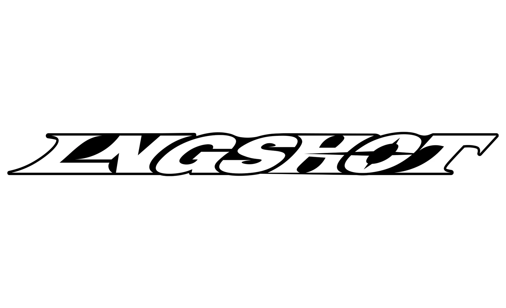
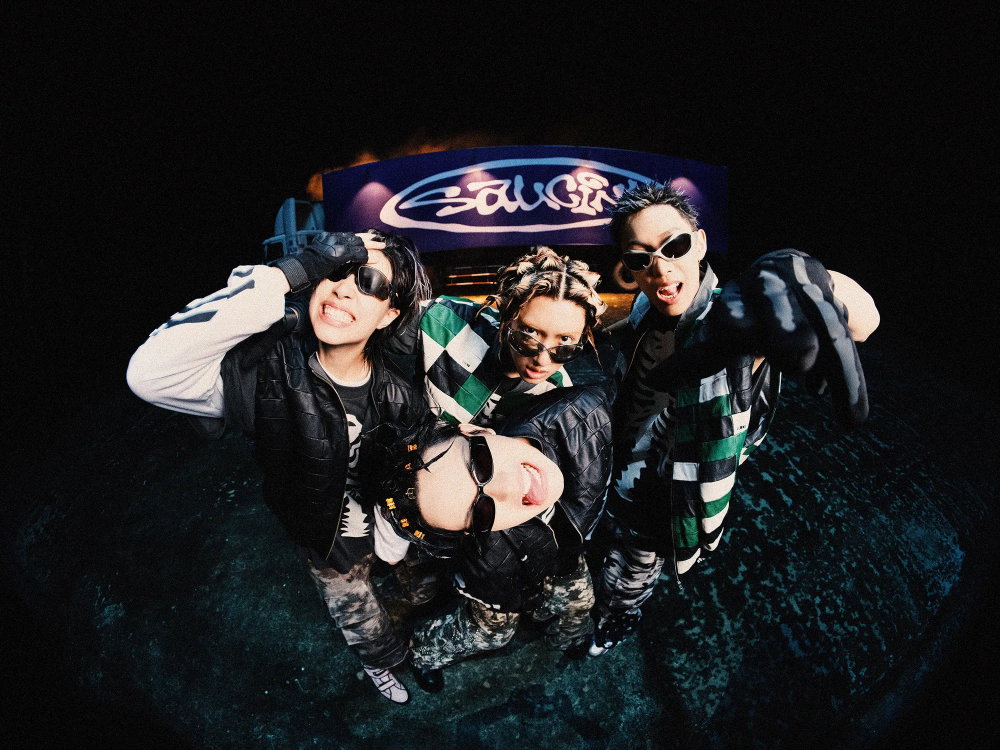
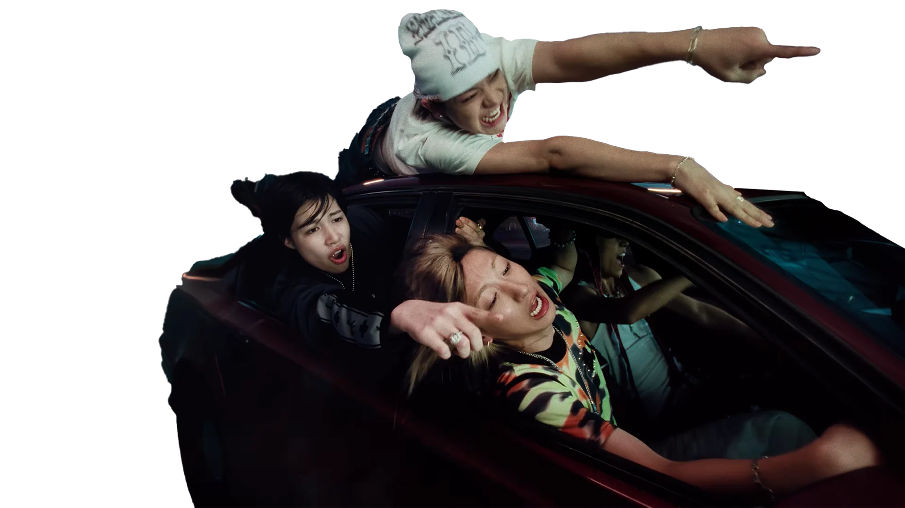

“The rhytm is in our blood, but the soul is in the struggle.”
야, 뭐해?
LNGSHOT은 박재범이 이끄는 MORE VISION의 첫 번째 보이그룹입니다. 2026년 1월 데뷔한 이들은 힙합을 기반으로 한 강렬한 사운드와 자유로운 에너지로 주목받고 있습니다. 정해진 틀에 머무르지 않고, 자신들만의 음악과 스타일로 K-POP의 새로운 길을 만들어 가고 있습니다. 무대 위에서는 자신감 넘치는 퍼포먼스로,


무대 밖에서는 솔직한 모습으로 팬들과 소통합니다. 이제 막 시작된 그들의 이야기는 앞으로 더 큰 무대를 향해 나아갈 것입니다.
- 멤버 우진 · 류 · 오율 · 루이스
- 소속 MORE VISION
- 데뷔 2026.01

앨범
“Taking a longshot against the odds isn’t just our name; it’s the only way we know how to play the game.”